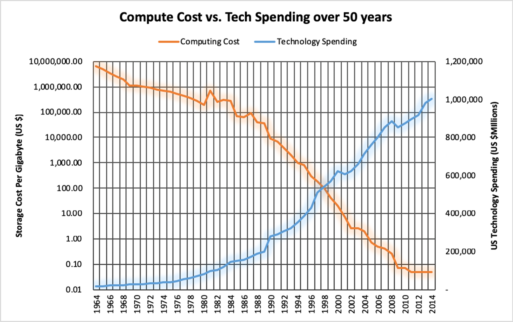

Git-Ledger: Sharealedger Runs Its Own Books on Git
March 2026
Sharealedger has completed the first live deployment of git-ledger — the open-source double-entry accounting tool built by and for open communities — using Sharealedger's own financial records as the test case. All five years of organizational history (2021–2025) have been imported, validated, and reconciled to the cent against existing audited financials.
What Was Built
git-ledger is a plain-text, Git-native accounting package. Journals are YAML files committed to a repository. Balances and financial statements are derived on demand from those files — no proprietary database, no vendor lock-in, no format you can't read in a text editor. The full accounting engine covers double-entry validation, multi-entity consolidation, configurable charts of accounts, and CLI-driven Income Statements, Balance Sheets, and Trial Balances.
Two importers are implemented for bringing existing books into git-ledger:
- Wave importer — reads Wave's double-entry CSV export format, groups rows by Transaction ID, and resolves Wave account names to chart codes via a declarative YAML mapping-rules file. This is what Sharealedger used for its own live import.
- QuickBooks importer — targets the QuickBooks General Ledger / Transaction Detail by Account CSV export, handling both Desktop and Online column variants. Uses the same mapping-rules pattern as the Wave importer. Intended for QuickBooks users migrating to or evaluating git-ledger.
What the Test Proved
310 transactions (55 LLC, 255 NFP) were imported from Wave accounting exports and written into version-controlled YAML journals. Every transaction balanced. Account 1050 Transfer Clearing netted to $0.00 on both entities. Year-end Income Statements and Balance Sheets were generated for both Sharealedger LLC and Sharealedger NFP for each year 2021–2025 and compared against existing financial statements:
Reconciliation Result — All Years ✓
| Year | NFP Revenue | NFP Expenses | NFP Net | LLC Expenses |
|---|---|---|---|---|
| 2021 | $6,500.00 | $4,868.03 | $1,631.97 | $6,991.76 |
| 2022 | $13,710.51 | $13,273.56 | $436.95 | $3,589.00 * |
| 2023 | $1,800.00 | $1,577.08 | $222.92 | $1,800.00 |
| 2024 | $2,800.00 | $2,755.30 | $44.70 | $2,800.00 |
| 2025 | $2,000.00 | $2,025.88 | ($25.88) | $2,000.00 |
* LLC 2022 shows a $20.76 year-split difference: Wave dated a cash-balancing entry January 2, 2023; the prior financials absorbed it into 2022. All-years totals reconcile exactly.
Design Principles Demonstrated
- Ephemeral ledger with provenance snapshots: No pre-computed balances are stored. Every balance and statement is re-derived from the raw journal on every run — consistent with the Sharealedger conceptual model's derivation invariant. When journal files grow large (past a configurable fraction of available memory), git-ledger can automatically write a
ledger-cache.yamlsnapshot stamped with the Git commit SHA it was derived from, creating a durable provenance record without replacing the ephemeral model. - Git as the audit chain: The commit history is the evidence chain. The committer is the authorizing agent. The Git SHA on any persisted snapshot ties it directly to the exact journal state it represents — no custom stamping mechanism is needed.
- Code and data separated: The accounting engine (public, Apache 2.0) lives in one repository. The actual financial records (private, member-readable) live in a separate repository with access controls.
- Multi-entity from the start: Both Sharealedger LLC and Sharealedger NFP run in the same books directory, with inter-entity transfers tracked via a shared event ID field and a Transfer Clearing account that must net to zero.
Repository Links
git-ledger
The accounting engine — public, open source, Apache 2.0.
github.com/sharealedger-org/git-ledger →sharealedger-books
The live financial records — private, readable by all Sharealedger members.
github.com/sharealedger-org/sharealedger-books →Members: Access the Live Books
The sharealedger-books repository is readable by all Sharealedger members on GitHub. It contains the complete YAML journal files, chart of accounts, and mapping rules for both entities — the full source record of Sharealedger's finances since inception.
The Problem with Financial Systems: An Overview
Before any of the formal Sharealedger exchanges took place, the core problem was laid out in full in an April 2018 working session at IBM's offices in Bangalore, India. Kip Twitchell spent 57 minutes with a room of IBM engineers building the entire case from first principles — starting with personal spending data and ending with why financial systems worldwide are stuck in an architectural pattern designed in 1494.
This session is the best single entry point into what Sharealedger is about. No assumed knowledge is required. The audience asks genuine questions throughout, which makes the argument unusually clear.
The Problem with Financial Systems: An Overview
Filmed April 10, 2018 · IBM Bangalore · 56:56 · Unpublished episode of Conversations with Kip
Full session record with 31-chapter guide →Key Arguments Made
- The McCarthy question (1982): If all transactions are stored in a shared database, why compute and store balances at all? Why not produce any financial report on demand directly from the transaction record?
- Why we don't: Financial systems were built when compute and storage were expensive. Throwing away transactions and keeping only balances was the rational economic choice in 1970. It still is in architecture — but not in cost.
- The permutation explosion: With even five attributes on a transaction, the number of possible balance aggregations is enormous. Every pre-computed balance added raises reconciliation overhead — and reconciliation cannot be fully automated.
- The daily financial cycle: Every night, banks "post" — taking transactions and updating balances — a process most modern accountants don't recognize by name, inherited directly from Luca Pacioli's 1494 Venice ledgers.
- "Running the computer backwards": When a balance is wrong, analysts dump data to Excel and manually re-add rows to reconstruct the number before analysis can even begin. This happens everywhere, every day, and may represent 30% of financial services operating costs.

Principles Lecture for Dr. William E. McCarthy
The first formal Sharealedger project effort was a presentation delivered for Michigan State University students under the direction of Dr. William E. McCarthy, the renowned researcher who originated the Resource, Event, and Agent (REA) economic accounting model.
Full Lecture: Principles Behind Sharealedger
Presentation given by Kip Twitchell exploring the historical constraints that shaped modern double-entry ledgers and how REA concepts enable multi-party shared ledgers.
Key Insights & Takeaways
- Ancient Origins to Manual Double-Entry: How the fundamental balance equation was codified centuries ago to fit physical quill-and-paper ledgers.
- The Trap of Early Automation: Because manual accounting was computerized early in the mainframe era, vendors focused on automating existing siloed processes rather than rethinking the cross-enterprise flow of financial data.
- Decoupling View from Event: How the REA model allows business transactions to be captured in an objective, perspective-independent manner before translating into debits, credits, or tax classifications.
Lecture Deck & Research Monograph
The complete 40-slide presentation deck ("Principles Behind Sharealedger") and the foundational research monograph ("Master Framework & Minimum Cost Curve") are available to members in the private repository.
Join Sharealedger to download member materials →Bookkeeping and AI: Why So Little Progress?
Following the MSU lecture, Dr. McCarthy referred Tom Hall, who authored an extensive paper exploring how to make understanding entities through accounting data more efficient. Over three recorded sessions, Kip and Tom explored why artificial intelligence has struggled with traditional bookkeeping data and how mathematical formalizations can enable true machine automation.
Session 1: The Entity and the Questions We Ask
Tom outlines the fundamental importance of an Entity (person, partnership, or corporation) and how standard historical accounting structures often fail to capture the questions modern organizations need to ask.
Session 2: Metric Engines vs. Search Engines
Kip and Tom compare search engines (which return individual documents/instances) to metric engines (which must calculate aggregate status over time). They discuss how true-up journal entries obscure underlying economic facts, and how preserving subledger key identifiers enhances enterprise-wide analysis.
Session 3: Mathematical Formulas for Automation
Tom reviews the specific mathematical formulas developed in his paper, explaining variables, relationship constraints, and how automated rule frameworks can interpret accounting activity with high transparency and ethical auditability.
Tom Hall's working papers and mathematical notes are available to members in the private research archive.
Join Sharealedger to access member research papers →Financial Systems: Time and Scope Discussions
Adeolu "Ade" Alao, Sandy Peresie, and Kip Twitchell engaged in extended discussions on the structural limitations of modern financial systems, predictive forecasting, and shared ledger simulation.
Core Concepts Explored
- Predictive Cash Flow from Structured Contracts: Current financial reporting is almost purely retrospective. By embedding machine-readable contract terms directly into transaction records, systems can compute precise forward-looking cash needs.
- Inside vs. Outside Existing Financial Institutions: Open Banking protocols focus mostly on transaction execution rather than shared access to underlying financial records. A genuine leap forward must develop outside legacy vendor silos.
- Capital Accumulation for Everyone: Re-examining the boundary between consumed expenses and capital assets (e.g. tools for ongoing production), enabling broader participation in wealth creation.
- Simple Simulation: Prototyping shared ledgers using dual-approved immutable records in cloud-shared sheets as a proof of concept.
Vision for a New Financial World
“To bring 1 billion people into the digital economy, not just through transaction payments and receipts, but with financial management capabilities that allow them to measure performance, contribute effectively, and prepare for the future.”
Overcoming Fragmentation
Today's financial data is held in proprietary silos by intermediaries. Categorization is treated as a post-transaction cleanup activity, and multi-party reconciliation consumes billions in wasted overhead.
Sharing financial data directly between authorized counterparties solves this at the root:
- Dual Verification: Actions taken by one party are immediately verified by the counterparty, eliminating the need for periodic reconciliation.
- Scale & Cost: Just as web search is organized around URLs and social media around posts, financial systems are organized around balances (point in time) and transactions (events over time). Building an ultra-low-cost, high-speed engine around this core allows universal participation.
The Journey Begins
“I wouldn't give a fig for the simplicity on this side of complexity; I would give my right arm for the simplicity on the far side of complexity.” — Oliver Wendell Holmes
Sharealedger was established to bring together experienced practitioners who understand existing system complexities and are committed to finding genuine simplicity on the other side.